AI協作 AI協作實踐(一):QAF音樂學習實驗工作站 2026-10-01 把「找資料的時間」，留給真正彈琴 買了教材、存了影片，也留下不少器材筆記，但要開始練琴時，還是得在資料夾、PDF、播放器與瀏覽器之間來回。這次和 AI 協作，我想試著把這些散落的材料整理成一個自己每天願意打開的地方：QAF音樂學習實驗工作站。
網站頁首寫著「QAF吉他學習實驗工坊」。對我而言，工作站說的是它的用途：從找一個音、讀一頁書，到規劃一把吉他的材料與切換方式，都能在同一個環境裡接著做。這篇以目前的本機版為主，帶大家走過各個主要標籤。
01 每日記憶｜先把音名與位置練熟 這一區是每天拿起吉他的起點。指板音名可以換音、遮住答案；CAGED 把同一個和弦的不同形連起來；七和弦琶音則能選擇指型，對照根音與其他和弦音。五度圈、調號、世界音階與和弦延伸，也集中在同一排標籤中。
我在意的是「看懂以後，能不能自己找出來」。因此圖形旁邊保留練法、來源與記錄入口。七和弦和世界音階還能播放示範，選擇柔和或破音的電吉他合成音色、調整音量，讓眼睛看到的位置和耳朵聽到的聲音接起來。這些聲音是練習輔助，不是實琴音色或不同文化調律的完整再現。
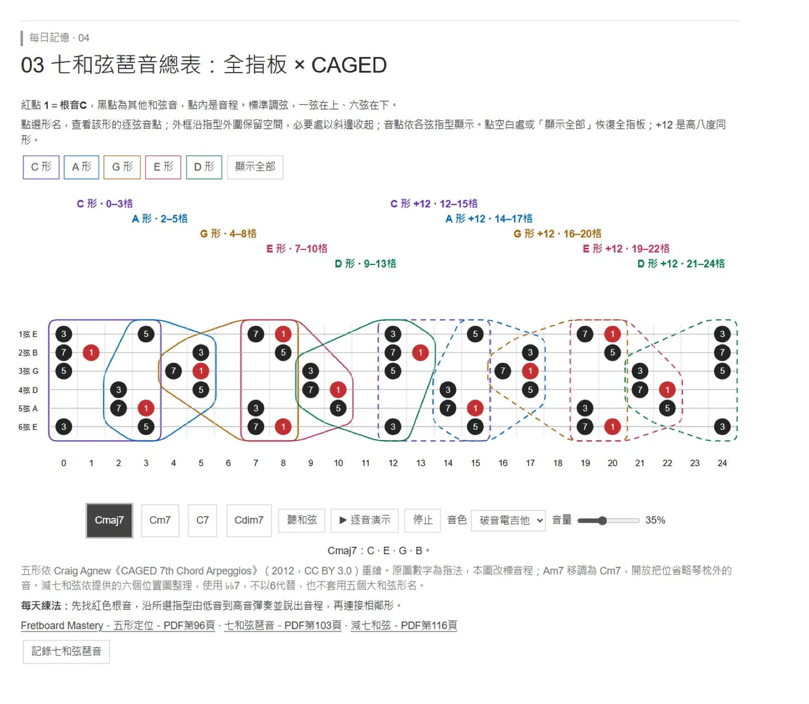
狀態一：Cmaj7 全指板與五個 CAGED 指型，包含高八度位置。 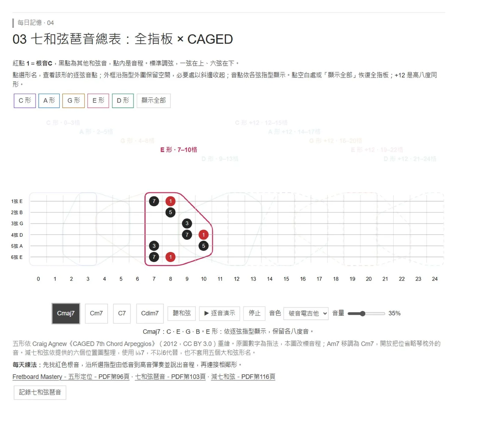
狀態二：選取 E 形後，只留下這個指型的逐弦音點；紅點是根音。 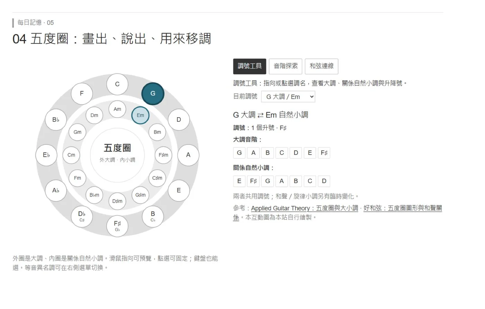
五度圈狀態一：G 大調／E 小調，顯示 F♯ 與對應音階。 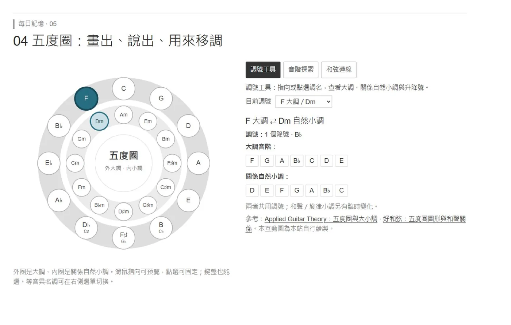
五度圈狀態二：F 大調／D 小調，圈上選取位置與調號一起改變。 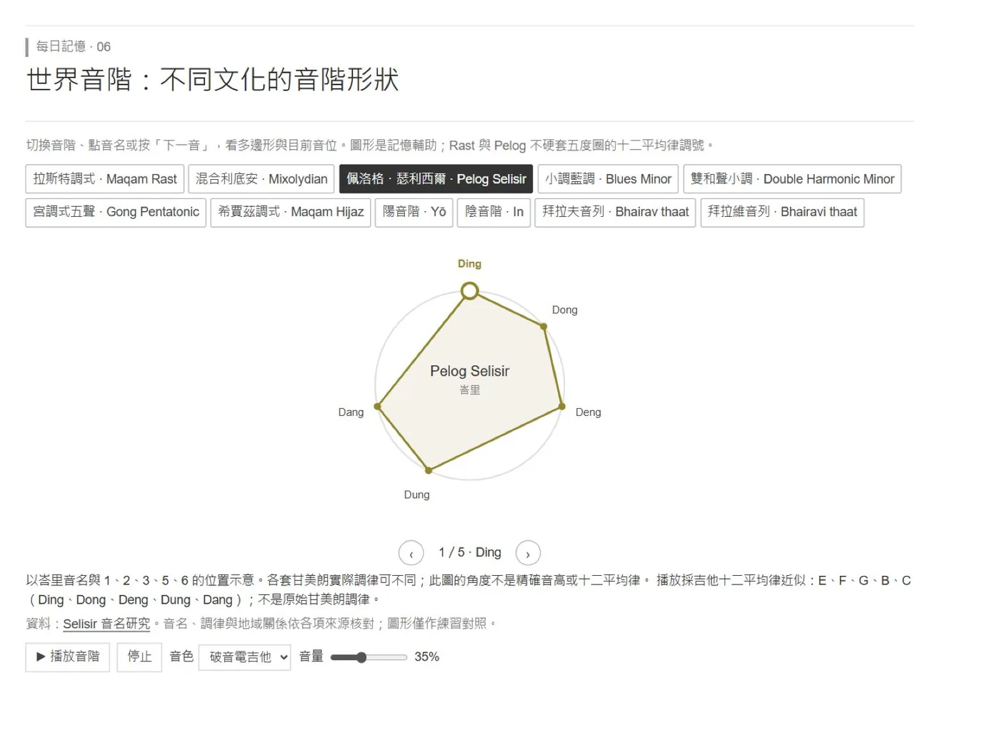
世界音階：Pelog Selisir 的音位與播放控制；吉他播放是十二平均律近似，並非甘美朗原始調律。 02 學習節點｜知道今天練什麼，也知道怎麼驗收 學習節點從分流自測開始，再依序整理七和弦、指板定位、伴奏、目標音即興等主題。每個節點都交代先修、練習方式與驗收條件，並連回教材頁面。
比起只記錄「今天練了幾分鐘」，我更想留下能否換調、能否不停拍、能否說出音級這類具體表現。節點提供一個可以回頭修正的路線；目前的練法與門檻是本站整理的教學設計，教材仍在閱讀中，路線也會繼續調整。
學習節點節錄：完整呈現先修、練習、驗收與教材參考欄位。 03 學習地圖｜先看關係，再決定往哪裡走 學習地圖用一張心智圖，把每日基礎、和聲與指板、伴奏與即興、技巧支線、表達與整合、回聽與回訪放在一起。點進主題，就能往下讀對應說明。
它提醒我：技巧可以在遇到瓶頸時補，熟悉的基礎也值得回訪。今天即興卡住，可能需要的是目標音與節奏，而不一定是再多背一個指型。
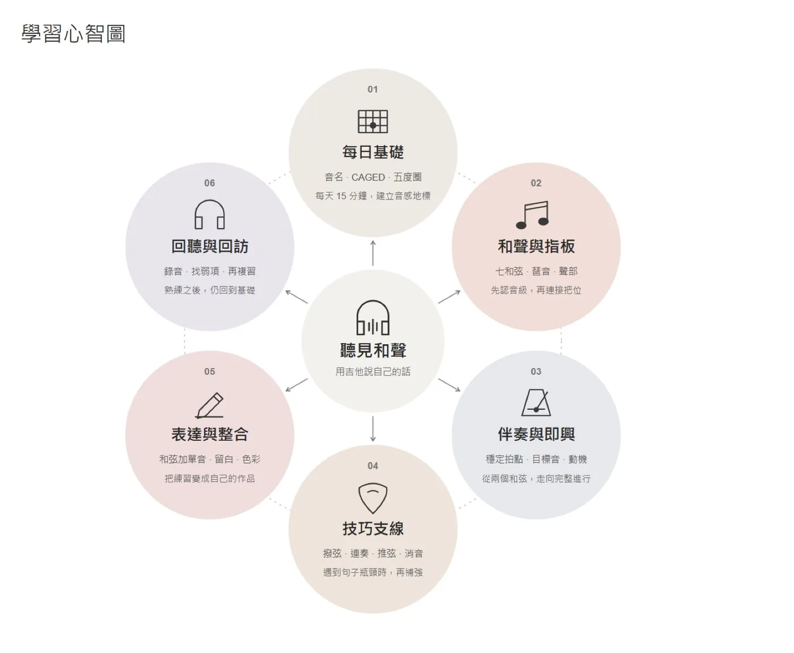
完整學習心智圖：六個主題圍繞「聽見和聲」，向下閱讀即可看完。 04 書籍觀點｜把作者的話與自己的延伸分清楚 書籍觀點把閱讀筆記分成「書中觀點、原文脈絡、本站延伸、理解時留意」，也保留來源頁碼。可以依技巧、練習、樂理、器材等主題篩選，從一個問題出發讀，而不必每次從整本書的第一頁開始。
這個分層對 AI 協作尤其重要。整理得流暢，不代表每一句都出自作者；有些是我的理解，有些是延伸練法，有些仍待核對。把它們分開，之後回頭查證才找得到問題在哪裡。
兩篇完整書籍觀點卡片：分類、作者、原文脈絡、本站延伸與來源頁碼。 06 練團曲｜把影片、譜與分工放在一起 「天際限」是我的樂團名稱。「天際限練團曲」是為我們樂團整理的練習區，將歌曲影片、樂譜連結、主奏與節奏分工，以及效果器和練習筆記放在同一張歌曲卡裡。練團前找資料時，就能一起看到參考版本、聲部分配與上次留下的問題。
遇到需要進一步研究的段落，也可以整理採譜請求，把時間位置和想處理的聲部說清楚。影片播放與筆記各自保留，避免看完示範後又忘了原本要練哪一小段。
我的樂團「天際限」的練團曲頁面：三首歌曲的影片、樂譜、採譜筆記與主奏／節奏分工。 07 雜誌／教材｜把自己的書架變成能閱讀的入口 書架可以依雜誌、教材、樂譜與影音教材切換，也能搜尋書名、作者或備註。封面讓找書更直覺，打開之後再進入 PDF 或對應影音。
手機上的 PDF 閱讀特別需要減少遮擋：全螢幕、左右翻頁、小型退出按鈕，都是在實際使用後慢慢調整的細節。整理的目的，是讓已經買下的書更容易被打開、被讀完，也更容易找回某一頁。
本區教材皆為本人自行購買，僅供個人整理、閱讀與練習使用。 本機可以讀取自己的資料；公開展示版與私人教材檔案分開處理。
書架首排五本雜誌：封面下方的書名、頁數、作者／出版資訊、備份狀態及編輯入口全部保留。 08 我的音樂｜把聆聽放回練習現場 「我的音樂」依資料夾瀏覽自己的音樂收藏，能把曲目加入播放列表。練完和弦或某種音階，就可以回去聽真正的作品，注意音色、段落和聲部如何使用。
手機直式時，曲名放在播放按鍵上方；播放器可以收起，需要時再按右下角的加號展開。這個小調整讓閱讀和播放能共用有限的螢幕空間。
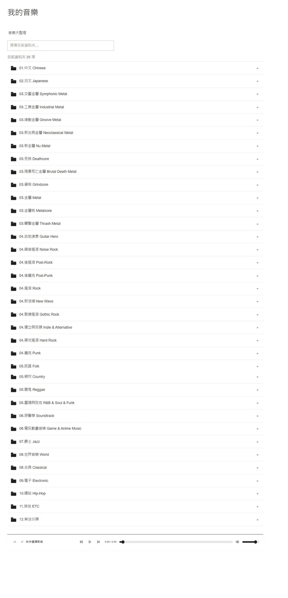
我的音樂：完整分類資料夾列表；播放器位於圖的最下方，不遮擋收藏內容。 09 QAF專欄｜讓研究留下可以回讀的文章 QAF專欄收納圖文與影片文章。這次也把「務築青年專欄」整理成可以看最新文章、也可以依分類閱讀的形式：「QAF x SOGOLO」記錄吉他設計與實踐，「AI協作」記錄工具和工作方法。
前者可以從電路讀到材料，後者則保留這個網站如何被做出來、又如何被使用。文章可以在本機編輯與匯出，逐次補充。
QAF 專欄入口：務築青年專欄與地下樂手拼盤實驗室。 10 效果器新聞｜收藏之後，再問它和演奏有什麼關係 這一區保留感興趣的新聞網址與問題，區分待分析和已整理的內容。分析時可以追查產品脈絡、線路與功能，再想想它適合放在什麼演奏情境。
保存網址不會自行啟動 AI 分析。需要研究時，把頁面整理的分析請求交給對話，再將完成的內容保存回網站；來源和待查部分也一起留下。
效果器新聞收藏入口與已分析文章摘要；播放器位於整張長圖最下方。 11 購物網站｜保留常用入口與選料線索 購物網站依樂器、效果器、零件與 DIY 等用途整理入口，附上地區和簡短用途說明。做琴或研究效果器時，可以從先前存下的線索接著查，不必每次重新搜尋。
這裡的價值是保存脈絡，例如某顆旋鈕或開關為什麼被列入候選。實際選料仍要回到規格、尺寸和設計需求核對。
購物網站各分類完整呈現，保留名稱、地區與用途說明。 12 吉他設計｜從想要的聲音，走到可討論的規格 吉他設計把琴款、電路改裝、設定調教與參考圖庫分開。QAF1 集中材料、硬體規格和切換模式；QAF2 則提供方案篩選、部位意見與參考資料的工作區。
以 QAF1 為例，拾音器圖把輸出中的線圈、未選入的部分和串聯方式畫出來，讓「按一下會換成什麼」能直接討論。功能規劃、待確認的零件與實際焊接仍需分清楚；圖畫得清楚，是為了更容易驗證與溝通。
QAF1 切換功能圖：線圈選擇的視覺對照；功能圖不等於完整焊接圖。 還有一層：教材庫、進度與練習紀錄 主要標籤之外，教材庫和搜尋頁面用來找回來源；進度總覽整理閱讀與分析狀態；練習紀錄則留下實際練習的回訪線索。備份與匯出讓這些累積有機會在之後繼續使用。
讀了多少頁，和吉他彈得如何，是不同的事情。我希望這兩種紀錄能互相參照：讀到的方法拿去試，試過的問題再帶回教材裡找答案。
中文對照進度與最近練習／回訪：已翻譯並核對 8 頁；閱讀分析與完整翻譯分開計算。 AI 協作，從一個個「用起來卡住的地方」開始 這次協作很大一部分都發生在細節裡：標題和內文間距要多遠、主標籤切換為什麼會跳動、指板的線是不是太粗、手機播放器會不會壓到按鍵。需求往往是在真的拿起手機、真的準備練琴時才變清楚。
我的角色是提出用途、選擇內容、檢查閱讀與操作感受；AI 協助整理資料、製作介面與互動圖、處理程式，再根據回饋修改。音符、資料來源與電路關係，仍要回到教材與實際使用核對。
目前這個工作站仍在成長。接下來最值得做的，是把已經放進來的內容練過、讀過，再依真正遇到的問題繼續調整。工具做得順手，拿起吉他的那段時間才會比較完整。
本文依 2026 年 10 月 1 日的本機版整理，配圖為本機介面與既有設計圖。私人教材、音樂與本機編輯功能，不等同於朋友展示版的開放範圍。
QAF x SOGOLO QAF.1吉他設計與實踐（二）材料篇 ｜清楚的稜角，柔和的呼吸 2026-09-29 QAF.1 BETA｜事務所官方 LOGO 與 Mastery MV KIT 規格校正版。 QAF.1 是我和 SOGOLO 一起往前走的一把 offset：保留我喜歡的 Jazzmaster 搖座手感，換上幾何琴身、不同的木材組合與 500k 主控制。我想要的聲音很具體——撥弦時再俐落一點，和弦展開時仍有空間；邊緣可以帶毛刺，手感卻要讓人願意一直彈下去。這篇寫的是選材的理由，也是一份對成琴的期待。
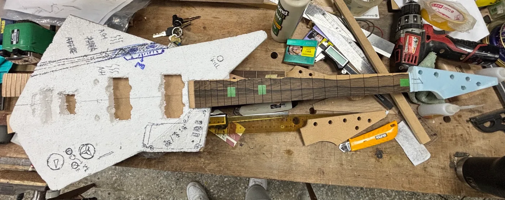
QAF.1 全尺寸模型與琴頸配置，用來檢查輪廓、控制位置及整體比例。
木材這樣搭配，好聽嗎？ 最初的理由其實很單純：Ash 很漂亮，而我想要一把全黑的琴。Ebony 指板延續黑色，染黑的 Ash 則讓光線落下時仍看得見木紋。後來想到以前那把約 1998 年的 Ash Stratocaster Deluxe，我更捨不得放掉這個方向：我記得它的聲音有清楚的形狀，邊緣略帶毛刺，彈起來很有表情。
以 Fender 的復古 1966 Jazzmaster 規格作參照，它採用 Alder 琴身、楓木琴頸與玫瑰木指板；QAF.1 則在 Alder 上加入 4 mm Ash 面板、Chamber 與 Ebony 指板。Ebony 最初是為了全黑的外觀，後來也承載了我對聲音的期待：音頭再結實一點，Punch 更集中，顆粒感稍微大一點。撥下去的那一下，我希望聽到有份量的落點；音符展開後，仍保留 Ash 讓我喜歡的清楚邊緣。這是我對整套搭配的預期，實際效果還要聽成琴。
琴身 · Alder；較大琴身以 Chamber 減重。挖空範圍、保留區與實際重量待核。
琴身面板 · 4 mm Ash；染黑仍想看見木紋。填孔與漆層待試片。
琴頸 · 虎紋楓木；視覺紋理為選材重點，實際琴頸剛性與手感看成品
指板 · Ebony 黑檀；想要全黑、顏色一致的指板，與染色 Ash 呼應
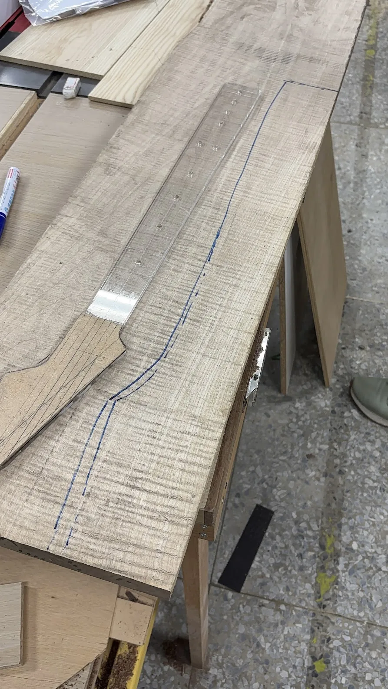
琴頸木料與模板：先在木料上確認琴頸輪廓及紋理方向。 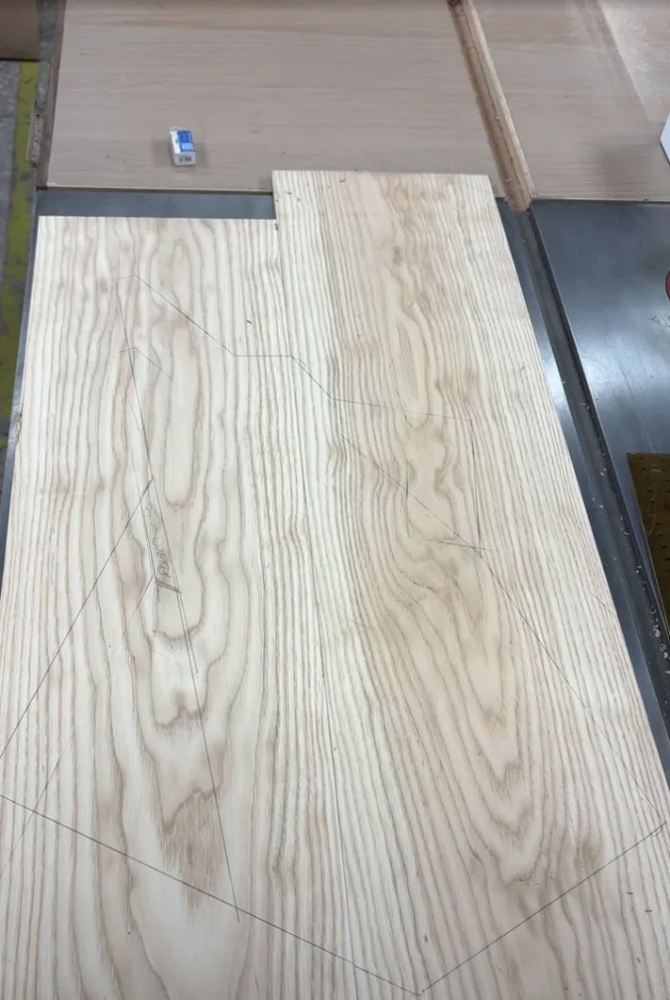
琴身木料放樣：幾何外形從紙面回到實際木料的尺度。 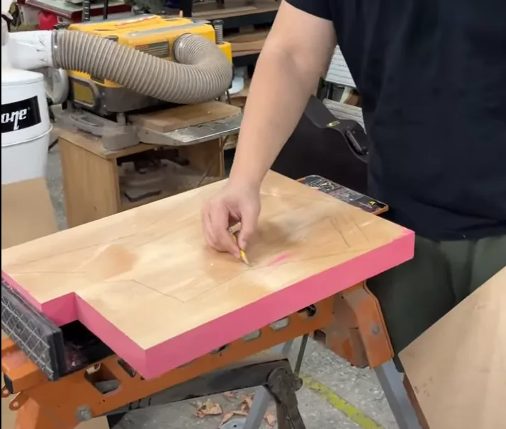
工作檯上的放樣過程，將設計輪廓轉移到木料上。 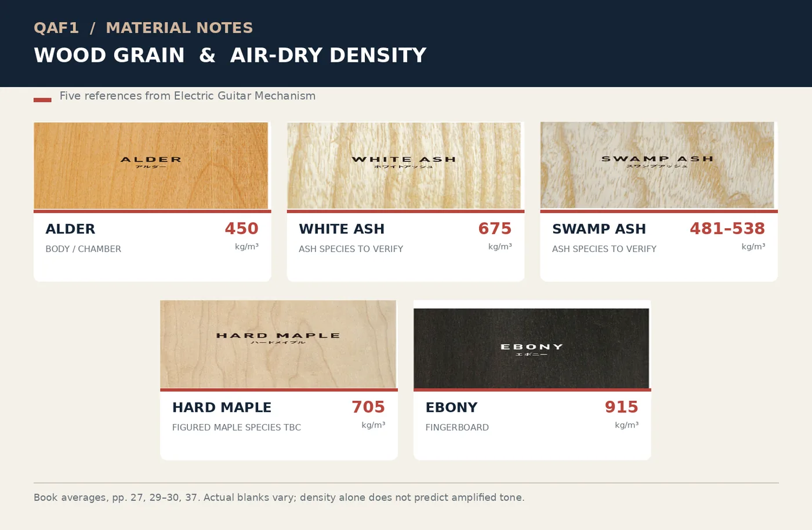
QAF.1吉他設計與實踐（二）材料篇 ｜清楚的稜角，柔和的呼吸
五金這樣搭配，好聽嗎？ Jazzmaster 的傳統搖座位置，離琴橋較遠，橋後弦段較長；部分現代改良款把搖座往琴橋移，例如 Squier J Mascis Jazzmaster 。其他高度條件相同時，前移會讓弦跨過琴橋後的折角更陡，增加弦對弦鞍的下壓力。這裡調整的是琴橋與搖座之間的距離。
傳統位置參考：觀察琴橋後方到搖座的弦段，兩者之間留有較長距離。照片：Home of Tone；此圖用來觀察配置，不作尺寸量測。 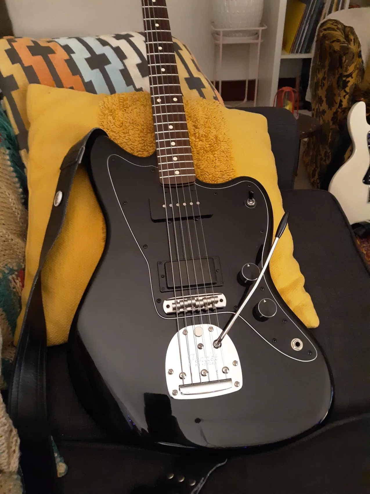
現代前移配置參考：使用者提供的 Blacktop Jazzmaster 照片，搖座靠近琴橋。照片中的琴已有改裝；不同透視與比例不能直接用來量測距離，也不代表所有現代 Jazzmaster 都採用這個位置。來源：Reddit r/offset 原帖。 QAF.1 選擇接近傳統的位置，是希望手上的緊繃感鬆開一點：撥下去有支撐，推弦和搖座的回應卻留一些餘裕。我也希望調整整套機構後，那些搶在音符前面的金屬雜音能少一點，讓和弦的晃動更從容。
這份「鬆」指的是操作手感；同樣弦規、有效弦長與音高下，弦的基本張力不會因搖座後移就降低。較淺的折角也不保證減少雜音，仍要把弦鞍接觸、零件鬆動與橋後弦段的共振一起調整。
琴橋／搖座選擇 Mastery MV KIT，保留傳統 JM 搖座距離。我期待這套搭配能留下清楚的音頭，也保有我喜歡的 Jazzmaster 呼吸感。
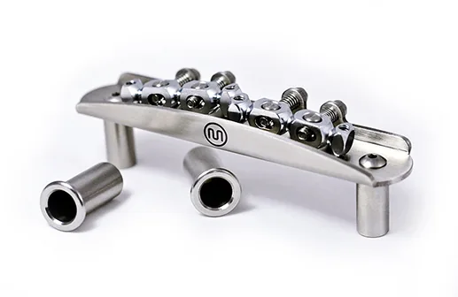
Mastery M1 琴橋與 MT 套管，MV KIT 的琴橋組件。圖片：Mastery 官方。 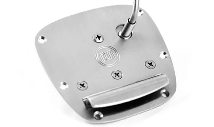
Mastery MV 搖座正面斜角照：底板、固定螺絲、穿弦板與搖桿座。MV KIT 包含 MV 搖座、M1 琴橋及 MT 套管。圖片：Mastery 官方。 同樣是 25.5 吋弦長，QAF.1 用 12 吋指板弧度與 Medium Jumbo 品絲；相較復古 Jazzmaster 常見的 7.25 吋弧度，這套尺度更貼近我推弦與設定弦高的習慣。我預期它在手上會比較俐落，搖座仍能帶出柔軟的晃動。四點分開固定琴頸也納入整體設計，但是否更柔和，不先替成琴下結論。
琴頸形狀 · C Type，已採樣 Black Top
弦鈕 · GOTOH SG381，45度，換GUYKER鈕
琴橋／搖座 · Mastery MV KIT；傳統 JM 搖座距離。
500k：讓明亮有一個舒服的落點 傳統 Jazzmaster 主電路常見 1M 電位器 ，保留較突出的共振與高頻存在感；QAF.1 選用 500k 主控制。在其他條件相同時，較低的阻值會增加負載，通常讓共振峰收斂一些。我期待的是清楚卻不緊繃的上緣：乾淨音色能留下空氣，接上破音和長殘響後，也比較容易安放在整體聲音裡。
這正是 QAF.1 有趣的平衡：一方面追求更俐落的起音，一方面替高頻留一個可控制的出口。500k 並不保證整把琴一定比傳統 Jazzmaster 暗；它讓我有機會把清晰、厚度和效果器相容性一起調到喜歡的位置。
反應速度：我想再快一點 我現在的試作琴已經有舒服的厚度，只是撥片落下去，聲音還可以再往前一步。所以 Ash 面板、Ebony 指板與 Mastery 琴橋這個方向，我決定留下來。我想聽見分解和弦的每個音更快站好位置，低音弦有重心，高音弦則在尾端留下一點帶毛刺的光。
這裡的「快」，指的是起音的感覺，並不是音高更高。理想中的 QAF.1，輕彈時能聽清楚音頭，刷下和弦時又不會每根弦都搶著衝出來；接上殘響與延遲後，前端仍有清楚的輪廓。這是我對整套搭配的預期，會由弦規、設定和實際裝配一起完成。
如何軟化：讓輪廓留一點空間 大琴身需要先把重量處理好，Chamber 因此有很實際的理由。製琴師也提到，適當挖空可能帶來比較柔和、略有空心感的回應。這正合我的期待：起音有精神，音符展開後卻能鬆一點，讓大和弦有呼吸，長音也不只是硬硬地停在那裡。
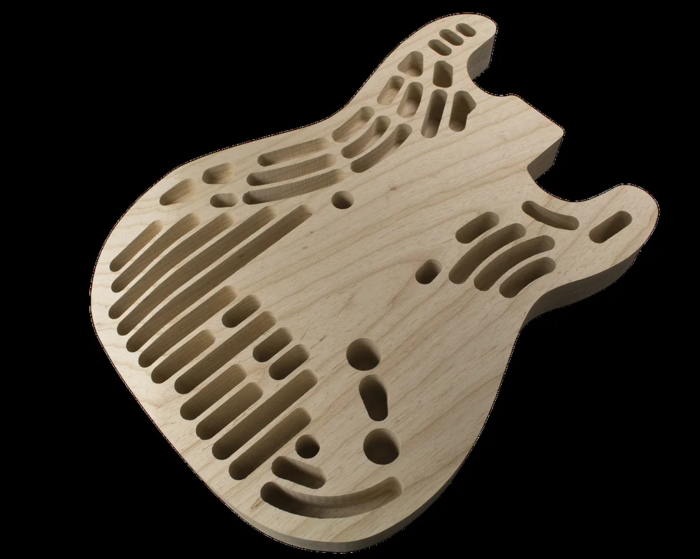
Chamber 挖空結構參考：上蓋封合前，可見琴身內部的腔室與保留木料。圖片為 Guitarbuild 的其他琴身設計；QAF.1 的挖空範圍、深度與承力區仍須另行規劃。 漆面同樣是這份手感的一部分。我想保留染黑 Ash 的紋理，也想試較柔的面漆，讓視覺與觸感少一些厚重包覆感。《Electric Guitar Mechanism》把填孔、封閉、著色與面漆分開談，提醒我先用實際木料試片。蟲膠或硝基尚未定案，Chamber 與漆面能帶來多少插電音色變化，也留給成琴回答。
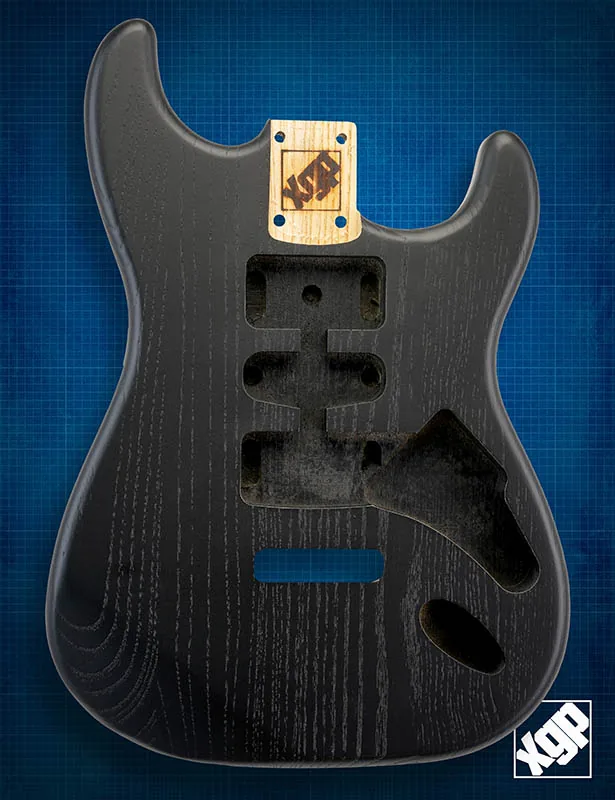
黑色 Ash 外觀參考：霧黑表面仍能看見起伏木紋。圖為 GuitarFetish XGP Matte Grained Ash 琴身，官方標示霧面琺瑯塗裝；此處參考色澤與木紋，不代表 QAF.1 已選定相同漆種或漆膜硬度。 材料圖卡摘錄書中的平均氣乾密度，適合用來理解重量與選材的差異。White Ash 與 Swamp Ash 同列，提醒我們「Ash」並不是單一重量；虎紋也只是紋理名稱，不能直接等同 Hard Maple。實際木料仍要量重、確認樹種，音色則聽整把琴。
搭配評語｜我期待 QAF.1 的重心是「清晰、結實，留有彈性」。500k 的電路負載有較明確的收斂共振作用；木材、挖空與漆面則共同參與整把琴的振動和手感，不能各自換算成固定的高低頻。這套方向值得期待的，是清楚的音頭與較從容的尾韻有機會同時成立。
如果最後彈起來，能讓我保留那把 Ash Strat 記憶裡漂亮的邊緣，又比現在的試作琴多一點起音的精神，QAF.1 就走到了我想去的地方。全黑只是第一眼；真正想留下來的，是拿起來後願意多彈幾個和弦的感覺。
圖版｜木紋與密度小圖取材自《Electric Guitar Mechanism》頁 27、29–30、37。White Ash、Swamp Ash 並列，是提醒我先確認這塊 Ash；虎紋楓木的樹種也待定。
QAF.1 規格整理 部位 目前規劃 琴身 Alder，Chamber 挖空；範圍、深度與重量待確認 面板 4 mm Ash 琴頸／指板 虎紋楓木／Ebony 琴頭貼面 Ash；厚度待定 弦長／指板弧度 25.5 吋／12 吋 品絲 Medium Jumbo 鎳銀 頸型 C Type，採樣 Black Top 上弦枕 黑色 TUSQ 或黑牛骨，待選 弦鈕 GOTOH SG381，45 度，搭配 GUYKER 鈕 琴橋／搖座 Mastery MV KIT 頸位拾音器 Lollar JM ’58 橋位拾音器 Seymour Duncan P-Rails TB 主控制 500k；切換方式另見電路篇
這份表記錄設計與選料階段的配置；尚未定案的項目保留註記，實際裝配與設定仍以成琴為準。
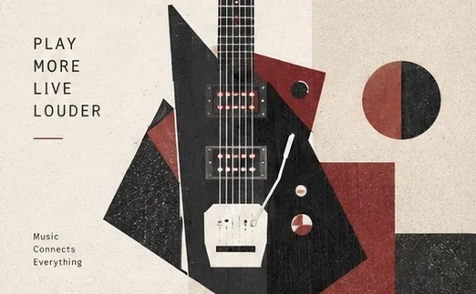
QAF.1 概念視覺：Play More, Live Louder。 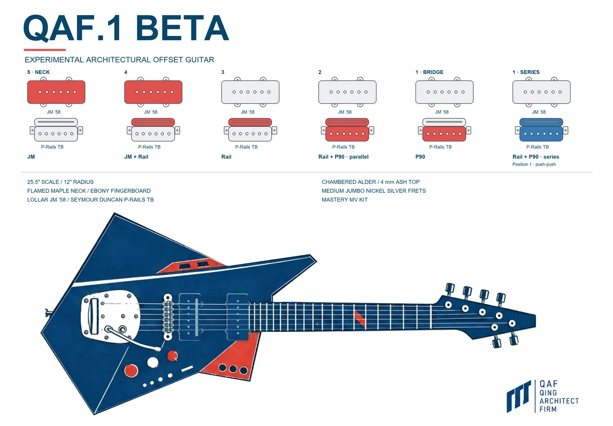
QAF.1 BETA：原圖保形合成與拾音器切換示意。前五格為一般模式，第六格是第 1 段切換至串聯雙線圈，並非六段開關。 QAF x SOGOLO QAF.1吉他設計與實踐（一）電路篇 ｜雙線圈，2/4段，都能一鍵切換 2026-09-29 務築青年 The builders｜SOGOLO × QAF 吉他專案
QAF.1吉他設計與實踐（一）電路篇 ｜雙線圈，2/4段，都能一鍵切換
QAF.1是⋯？ 我知道也許你還不知道我設計了一把啥咪樣的吉他，但我想跟你分享一下，電路這樣搭配真的蠻好用的哦
MURMUR 畫圖時想的是造型，練團時想的卻是手能不能在下一拍找到那個聲音。QAF.1 的電路，就是從這個小小的任性長出來的。
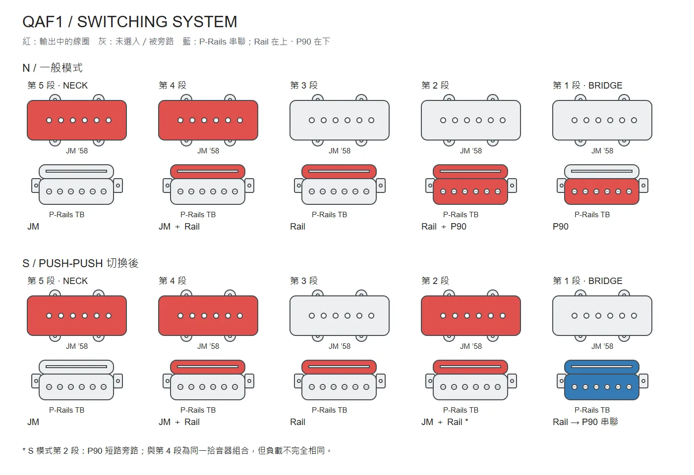
QAF.1吉他設計與實踐（一）電路篇 ｜雙線圈，2/4段，都能一鍵切換
我們可以先把QAF.1想像成一隻單單單的吉他 拾音器：lollar 58 jazz master /p-rails tb
第5段跟第1段的搭配：乾淨的 JM 頸位，橋位可選p90或HB。
一秒切換二、四段：用 PUSH-PUSH 往返 P90＋Rail 與 JM＋Rail。
一撥，從乾淨前奏走到搖滾大爆炸 我喜歡一首歌慢慢長大的過程：先用頸位 JM 彈幾個音，讓延遲在空間裡留下回聲；鼓進來，和弦開始堆疊，最後整團一起落下。那一刻，我希望不必在細小段位間找位置，把撥桿推到另一端，就能接住下一拍。然後用P90 炸裂音牆，Solo時，按下 PUSH-PUSH，雙線圈啟用，一個更集中、更有中頻重高增益段落信手拈來。
搭配預期｜P90 像是把和弦的邊緣攤開，串聯雙線圈則把重心往中間聚。單是真的單，雙是真的雙。切單不是折衷也就是p-rails最有價值的地方。
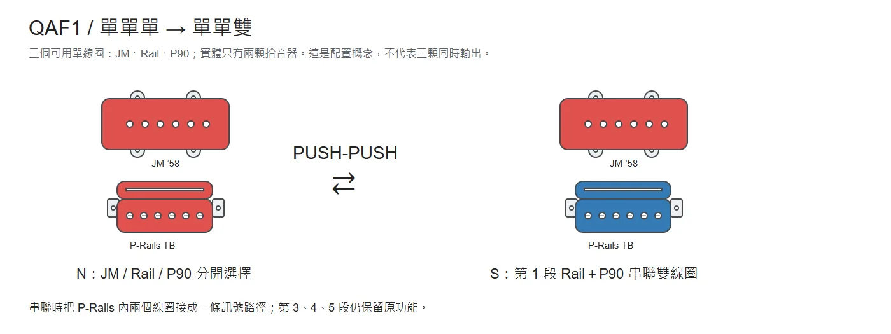
QAF.1吉他設計與實踐（一）電路篇 ｜雙線圈，2/4段，都能一鍵切換
一秒切換二、四段，下一拍就換表情 喜歡二、四段的人，應該懂那種台上來不及的瞬間：耳朵已經想好下一個聲音，手卻還在撥桿中間找位置。QAF1 把這個動作收進 PUSH-PUSH。先停在第 2 段，按一下，就能在 P90＋Rail 與第 4 段的 JM＋Rail 組合之間往返。
我期待 P90＋Rail 的並聯保留明確顆粒，JM＋Rail 則換上不同拾弦位置混合出的層次。彈藍調時，前一句收得短，下一句拉長推弦；或在刷扣之間留一拍，再切進另一個聲音。這個設計的亮點，是段落換了表情，手上的節奏仍然順著走。
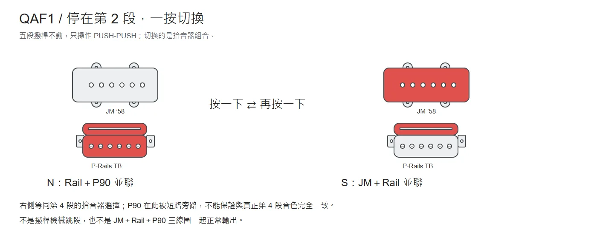
QAF.1吉他設計與實踐（一）電路篇 ｜雙線圈，2/4段，都能一鍵切換
還有一個小驚喜、Kill Pot：把節奏斷音藏進旋鈕 原本很煩惱kill switch的位置跟造型、後來想說應該有跟pot 結合的機會，就真的有這種產品耶！鍵程1mm，全開可以扣住，一顆 Tone 旋鈕，平時調音色，按下便斷音、放開就回來。Kill Pot 讓面板少一個獨立按鈕，也讓斷音成為右手能直接玩的節奏：一個短促的停頓、連續幾下切碎的尾音，都能跟著歌曲走。內建 Fuzz Factory 則留給另一種粗顆粒的爆發。
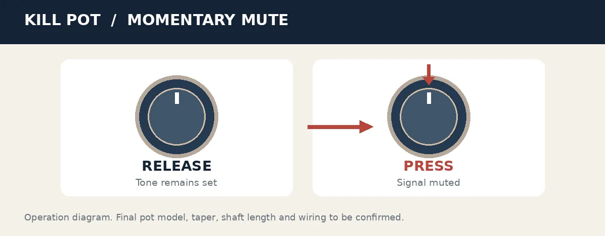
QAF.1吉他設計與實踐（一）電路篇 ｜雙線圈，2/4段，都能一鍵切換 圖為操作示意，產品照片可見 Shadow SH 124-500 Kill Pot 的參考頁 。這類電位器按下瞬時斷音、放開回復，旋轉時仍是普通 Tone 控制；參考品標示 500k 對數曲線、約 1 mm 按壓行程及彈簧復位。QAF1 的 A500k 曲線、軸長、面板厚度與接點仍須核對。若 Fuzz 在 Kill 之後，前級斷音未必讓效果器自身完全靜音。
先前以為很有態度的實驗 這套安排來自一次不太順利、卻很有收穫的試作。當時把 Neck 版 P-Rails 裝在橋位，想說有沒有機會配出亮麗的橋段音色，但Rail 出力偏小，我用電阻接地補音量、音量與音色調整追平各段。愈想把每一格補好，線路卻愈來愈難整理，同時rail音色也變太胖了。
更困擾我的， neck版本會把細碎的弦與金屬聲被推到前面，中高頻擠在一起，厚卻不夠通透。讓我花太多時間收拾音色。
回到普通五段、更換成tb版本p-rails，並且拿掉那些補償支路後，我在試作琴上聽到 Rail 音量改善，P90 也變得厚實而清楚。這次經驗讓 QAF1 的方向定了下來：留下真正會在演奏時用到的切換，讓調整有清楚的起點。
高音補償的選擇：這次先不裝 音量旋鈕往回轉，我希望聲音也跟著退一步。這次選 B500k 音量，不裝高音補償，也不加曲線修正電阻；在我的試作琴上，這樣的下降過程有較多可用行程，輕重也比較容易掌握。Tone 則規劃 A500k Kill Pot 與 0.033 µF 電容。
之前試過 560–1000 pF，音量退下時，高頻像另有一條路徑留在前面，對我而言太難控制。現在讓它隨音量一起退，乾淨聲音更容易坐進伴奏裡，也保留我喜歡的有機感。270 或 330 pF 留作未來實驗的候選，這一版先照自己的耳朵，不裝。
Rhythm 滾輪規劃成第二組預設：500k 音量、500k 音色與 0.033 µF 陶瓷電容。主控制與滾輪組切換時，未選的那組須隔離；音色落差依實際旋鈕設定與負載來聽。
評測註記｜前文的音色形容包含設計預期；舊琴改線後的聽感是已有經驗，QAF1 的橋位 P-Rails TB 則尚待成琴驗證。接線完成後會用同一段演奏比較各模式的音量、清晰度與動態，核對二、四段切換的負載，以及 Kill Pot、Fuzz 和常用效果器一起工作時的反應。期待的是一把讓段落變化更直接、也更願意拿來演奏的琴。